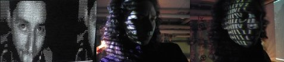

Jaromil's Musings

leave your comments
 printable page
printable page

HasciiCam is a software released in 2000 with the intention to provide all GNU/Linux users with a tool to stream live ascii-video on the web: a video made of letters, resembling the original picture thanks to the variety of characters density.
Originally based on the AAlib implementation by Jan Hubicka, it lets users render live video from webcams, a technique then used in a large number of real-time installations and performances.
HasciiCam can also be render a web page with an automatic refresh: once uploaded on a web server, anyone watch can the ascii-video stream using a simple browser without any plugins.
Since its first release HasciiCam has been re-used by a number of artists for performances, installations and net-based artworks, appreciated for its aesthetics and simplicity. Among the contributors to its code are Gerd Knorr, Thomas Pfau, Josto Chinelli, August Black, Martin Guy, Erich Berger, Alessandro Preite Martinez.
The source code is available on ftp.dyne.org/hasciicam

| 2007 | Streamfest, Lecce (Italy) |
| 2003 | Otokultivator, Vis island (Croatia) |
| 2001 | Digital is not Analog Metagallery |
Major step forward towards live ASCII streaming has been made by Jaromil and the group around dyne.org: their product, Hasciicam..."makes it possible to have live ASCII video on the web. It captures video from a tv card and renders it into ASCII, formatting the output into an html page with a refresh tag or in a live ASCII window or in a simple text file as well, giving the possibility to anybody that has a bttv card, a linux box and a cheap modem line to show a live ASCII-video feed that can be browsable without any need for plugin, java etc. Hasciicam's source code is released under the Gnu Public License."
Seems like only yesterday that we clustered around the office SGI, revelling in CHRIS PIRAZZI's amazing 1995 live video->ascii art convertor. Well, now you too can pray that such fripperies don't lead your company to inevitable stagnation and collapse, when you too compile your own copy of HASCIICAM for Video4Linux. Features include dumping in VT100 friendly spools (for live telecasts via telnet) or automatic HTML generation for counterintuitively large Webcam uploads. Now it's just a matter of selling banner-ad space on your "Am I Naked In This Text Dump Or Not" Website, and you'll have it all. http://ascii.dyne.org/
"The folks over at Dyne.org have hacked together a method to take live camera feed and turn it into ascii-character video on Linux. You can get the latest release, or see screenshots from a live stream. Y'know, this kinda ascii could be good random noise input for a cipher." read here all the discussion.
To reply some comments: in fact the HasciiCam software has been adopted to generate random seeds from a WebCam pointed on a Lava Lamp, among others by Sun labs in California.
Jaromil started to work on a software that would allow everybody to create a radio station on the internet, which would become MuSE (http://muse.dyne.org/). He also created a command line VJ tool called FreeJ (http://freej.dyne.org/); and he wrote a software which transcoded live video into ascii-video, called Hasciicam (http://ascii.dyne.org/).
Quality ASCII rendering can also be found in the mix, and it's worth noting that nearly all Free Software artists, including Jaromil with his superb Hasciicam app, have flirted with ASCII, a suitable marker for a low-tech DIY aesthetic.

|


|


|
 copyleft 2000 - 2009 dyne.org
foundation and respective authors. Verbatim copying
and distribution is permitted in any medium, provided
this notice is preserved.
Send inquiries & questions to dyne.org's hackers. copyleft 2000 - 2009 dyne.org
foundation and respective authors. Verbatim copying
and distribution is permitted in any medium, provided
this notice is preserved.
Send inquiries & questions to dyne.org's hackers.
|

|